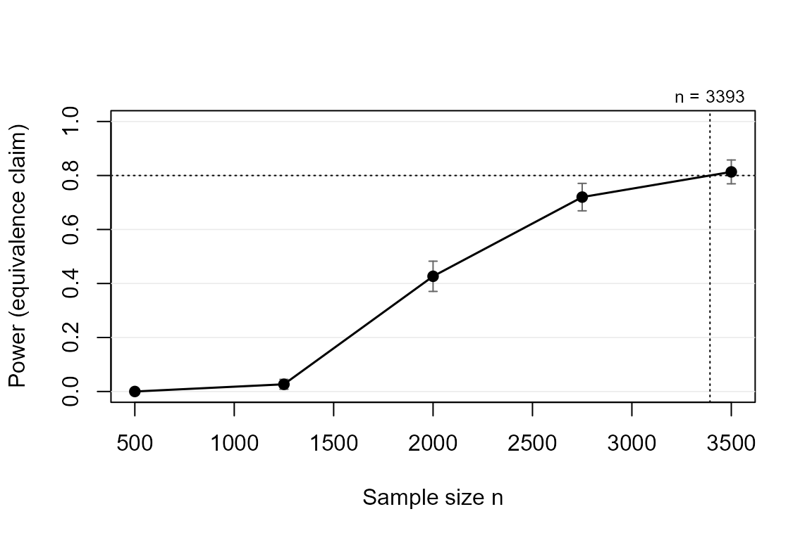

Powering for equivalence: showing an effect is too small to matter
Source:vignettes/equivalence.Rmd
equivalence.RmdThe claim
Sometimes the research goal is to show an effect is negligible: a cheaper treatment is not meaningfully worse, a feared side effect is not meaningfully present. The equivalence claim succeeds when the whole confidence interval lies inside (-SESOI, +SESOI). A non-significant test is not evidence of absence; a CI inside the equivalence bounds is.
library(powerape)
d <- ape_dgp(model = "probit",
focal = pa_var("treat", "binary", p = 0.5),
covariates = list(pa_var("age", "normal", mean = 45, sd = 12)),
baseline = 0.30, signal = 0.10)
d <- set_ape(d, target = 0) # planning value: no effect at allThe coherence guard requires |target| < SESOI: you cannot power for equivalence while assuming a true effect on or beyond the bounds.
Power and required n
ape_power(d, n = 2000, claim = "equivalence", sesoi = 0.05,
nsim = 600, seed = 1)
#> powerape -- equivalence claim (CI within +/-0.050)
#> probit, n = 2000, assumed true APE +0.0000, 95% CI, nsim = 600
#> power = 0.417 (MCSE 0.020)
#> outcomes: minimum 0.000 | detect-only 0.018 | inconclusive 0.565 | equivalence 0.417 | failed 0.000
ape_n(d, power = 0.80, claim = "equivalence", sesoi = 0.05,
nsim = 500, seed = 2)
#> powerape required sample size -- equivalence claim
#> n = 3584 for 80% target power (confirmed 0.855, MCSE 0.008)
#> assumed true APE +0.0000, sesoi 0.050, 95% CI, probit
#> search: 4 step(s); confirmed in 1 round(s) at nsim = 2000.Equivalence needs the CI to be narrow, not just centered near zero, so sample sizes are driven entirely by the SESOI: halving the SESOI roughly quadruples the required n.
cv <- ape_curve(d, n = seq(500, 3500, by = 750), claim = "equivalence",
sesoi = 0.05, nsim = 300, seed = 3)
plot(cv, target_power = 0.80)
A robustness note
The width of the CI for an APE depends on the baseline rate (binomial
variance peaks at 0.5), so equivalence power inherits that dependence.
ape_robust() makes it visible:
ape_robust(d, n = 2600, claim = "equivalence", sesoi = 0.05,
vary = list(baseline = c(0.20, 0.50)), grid_points = 3,
nsim = 300, seed = 4, nmax = FALSE)
#> powerape robustness sweep -- equivalence claim, APE, pin = ape
#> n = 2600, nsim = 300 per scenario, 3 scenario(s) over: baseline
#> power range [0.513, 0.807]; worst scenario:
#> baseline implied_effect power mcse
#> 0.5 0 0.5133333 0.02885725
#> scenarios:
#> baseline implied_effect power mcse
#> 0.20 0 0.8066667 0.02280026
#> 0.35 0 0.5700000 0.02858321
#> 0.50 0 0.5133333 0.02885725Reporting
power_statement() works for equivalence designs too, and
states the CI convention explicitly – with a 95% interval the implied
two one-sided tests run at the conservative 2.5% level (Riesthuis,
2024).
pw <- ape_power(d, n = 2600, claim = "equivalence", sesoi = 0.05,
nsim = 500, seed = 5)
power_statement(pw)
#> We conducted a simulation-based power analysis for the average partial effect
#> (APE) of treat using the powerape package (version 1.5.0), following the
#> confidence-interval approach of Riesthuis (2024). The assumed data-generating
#> process was a probit model with focal variable treat (binary, prevalence
#> 0.50); parametric covariates (age; Gaussian-copula dependence); baseline
#> outcome rate 0.300 with the focal at reference; nuisance covariates
#> contribute a latent pseudo-R-squared of 0.10. The assumed true APE was 0.000
#> (0.0 percentage points). At a sample size of n = 2600, simulated power for
#> the equivalence claim (the 95% confidence interval lying within +/-0.050) was
#> 0.632 (Monte Carlo SE 0.022; 500 replications). Across replications, the
#> probability of concluding a meaningful effect was 0.000, of detection without
#> meaningfulness 0.018, of an inconclusive result 0.350, and of equivalence
#> 0.632. Estimation used maximum likelihood with delta-method Wald confidence
#> intervals; replications that failed to converge (0.0%) counted against the
#> claim.